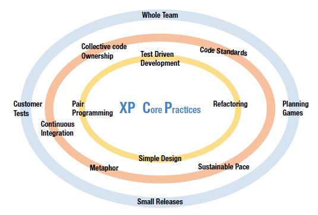

CM1 - Histoire des méthodologies de développement
1 Introduction
Objectifs
- Qualité
- Maintenabilité
- Evolutivité
- logiciel correspondant aux besoins du client
1.1 Vocabulaire: SDLC / Methodology
- SDLC: Software Development Lifecycle
- Quoi
- Quelles sont les étapes nécessaires pour produire un logiciel ?
- Software methodology
- Comment organiser les étapes ?
- Approche spécifique: Waterfall, Scrum, Kanban
Etapes SDLC: gestion de projet, coordination des équipes, cycles de livraison, communication avec les donneurs d’ordre.
1.2 Vocabulaire: Coding practice
- Coding practice
- comment écrire le code ?
- focus sur la maintenabilité, qualité, flux de travail
- exemples: TDD, pair programming, code reviews, refactoring, boy scout rule
1.3 Vocabulaire: Design
- Design principles
- focus sur la structure et l’architecture
- principes généraux plus philosophiques et subjectifs
- exemple: SOLID, YAGNI, DDD
- Design pattern
- solutions prêtes à l’emploi
- au niveau code ou composant
- exemples: Factory, Observer, Dependency Injection, Event sourcing
2 Années 1950-1990
2.1 Contexte
- Secteurs principaux : banques, assurances, défense, administrations
- Langages: C, COBOL, SQL, Fortran
2.2 Waterfall (Cascade)
- Calquée sur l’ingénierie classique: construction, industrie
- 1956 Description des phases Symposium on advanced programming methods for digital computers
- 1970 Diagramme formel Article by Winston W. Royce
- 1976 first use of the term “Waterfall”
2.3 Waterfall - diagramme

Ironiquement l’article de Royce critique le modèle: les test sont à la fin, ce qui est risqué et une invitation à l’échec.
2.4 Waterfall - critique
- client: cahier des charge incomplet, ambigu
- besoins découverts lors de l’utilisation
- Design phase : difficile d’anticiper les problèmes techniques
- rigidité
2.5 V-Model
- origines 1986-1991, Allemagne et USA, industrie de la défense
- 1992: formalisation avec le German V-Modell standard
- populaire dans les industries régulées nécessitant un maximum de sécurité
2.6 V-Model - diagramme

2.7 V-Model - V pour validation
- meilleure intégration des activités de test
- tests sont conçus / planifiés en même temps que les phases de construction
- ils sont exécutés à la fin de chaque phase
En Waterfall, on peut passer 6 mois à construire, puis on découvre en phase de tests que l’expression des besoins était fausse. Avec le modèle en V, on planifie les tests système en même temps que l’on écrit le cahier des charges. Cela permet de détecter les manques, incompréhensions, ambiguïtés plus tôt.
3 Années 1990-2000
3.1 Contexte
- internet devient accessible à tous
- langages: popularisation de l’orienté objet
- 1972 SmallTalk
- 1985 C++
- 1996 Java
- startups dot-com
- déploiement plus fréquent
- développement incrémental
Les premières méthodologies ont été inspirées de l’industrie et de la construction. Mais l’ingénierie du logiciel a des différences majeures :
- le client ne sait pas ce qu’il veut avant d’avoir le logiciel en main
- un logiciel est beaucoup plus facile à modifier qu’un mur, un pont ou une usine
- le code évolue plus vite que la documentation
1985 Eiffel
3.2 Rational Unified Process (RUP)
- framework adaptable
- itératif
- utilisation d’UML pour les activités
- supporté par la suite logicielle Rational
Rational a été racheté par IBM en 2003. 6 best practices for software engineering:
- Develop iteratively, with risk as the primary iteration driver
- Manage requirements
- Employ a component-based architecture
- Model software visually
- Continuously verify quality
- Control changes
3.3 RUP Hump

Montre l’effort à fournir pendant les différentes phases. Iconique, sert pratiquement de logo pour RUP. Ressemble à Waterfall, la différence est que les activités sont réalisées en plusieurs itérations, et qu’elles peuvent être en partie effectuées en parallèle.
3.4 Extreme Programming (XP)
- Tournant Agile
- 1999 Extreme Programming Explained - Kent Beck
- déploiement fréquent
- cycles de développement courts
- à la fois méthodologie et coding practices
3.5 Extreme Programming (XP) - Practices

Citer des refactorings. Pair programming, expérience perso :
- très efficace pour former des nouveaux arrivants, ou lorsque les niveaux de compétence sont différents.
- gros refactoring sur un projet, où le chemin à suivre peut être controversé
- exploration d’un nouvel outil, langage, framework
- cahier des charges pas clair
- mais assez fatiguant si fait toute la journée
- perte d’efficacité sur une fonction “straightforward” à implémenter
3.6 Extreme Programming (XP) - Valeurs
- communication
- simplicité, YAGNI
- feedback
- courage
- respect
simplicité: les autres méthodologies préconisent de prévoir le futur et de coder pour la réutilisabilité. XP: les gros changements ne fonctionnent pas. Coder la chose la plus simple qui fonctionne. Déployer des incréments fréquemment.
courage: refactor quand nécessaire
feedback : par les tests, le client, l’équipe. L’équipe donne les estimations.
respect:
- ne pas committer des changements qui ne compilent pas ou font échouer des tests.
- tous les membres sont appréciés et leur avis pris en compte.
3.7 Agile manifesto
- Individuals and interactions over processes and tools
- Working software over comprehensive documentation
- Customer collaboration over contract negotiation
- Responding to change over following a plan
3.8 Méthode Agile: Scrum
- itératif : sprints
- spring planning
- sprint review / demo
- backlog grooming
- stand-up meetings
- retrospective
Critique : dans certaines grosses entreprises, un process est imposé aux équipes, ce qui déroge au premier principe.
3.9 Méthode Agile : Kanban
- origine: Toyota 1940s, lean manufacturing
- workflow: define, visualize, manage items, improve
- WIP limits, Service Level Expectation

2008 Scrumban
4 Années 2000
00’s: Les GAFAM influencent les tendances dans l’ingénierie. - Google SRE - Meta: frontend development with React - Amazon: DevOps - Netflix: Chaos engineering, microservices at scale
4.1 Domain Driven Design
- 2003 Domain-Driven Design - Eric Evans
- ensemble de principes, patterns et pratiques
- idée centrale : modélisation basée sur le domaine business
- Strategic patterns (bounded contexts, context mapping, domain vision)
- Tactical patterns (entities, value objects, aggregates, repositories, domain services)
- Collaborative practices (ubiquitous language, domain experts involvement)
- Architectural guidance (layered architecture, hexagonal architecture)
Design principles:
- Domain-centricity: The domain model should be the heart of the software
- Ubiquitous language: Shared vocabulary between developers and domain experts
- Bounded contexts: Clear boundaries around domain models
- Model-driven design: The domain model should directly influence the code structure
4.2 Software Craftsmanship
- origine du mouvement : méthodes agiles pas assez centrées sur l’excellence
- inspiré des guildes du moyen-âge
- 2000 SOLID principles - Robert C. Martin
- 2001 Software Craftsmanship by Pete McBreen
- 2008 Clean Code - Robert C. Martin
- 2009 Software Craftsmanship Manifesto
- 2018 Clean Architecture - Robert C. Martin
Historiquement, programmeurs = scientifiques, puis ingénieurs.
Précision, prédictabilité, mesure. L’artisanat logiciel étend le manifeste agile.
Le programmeur est plutôt vu comme un artisan, qui est fier d’un travail bien fait et qui vise l’excellence. C’est un professionnel qui produit un code testé, lisible et maintenable. Il se soucie de la bonne santé du code sur le long terme. Il apprend de ses pairs sur le modèle de l’apprentissage.
Certains artisans programmeurs pratiquent les “code Kata”.
4.3 Software Craftsmanship Manifesto
- Not only working software, but also
- well-crafted software
- Not only responding to change, but also
- steadily adding value
- Not only individuals and interactions, but also
- a community of professionals
- Not only customer collaboration, but also
- productive partnerships
4.4 Wooclap
- quelle(s) méthodologies utilisez-vous dans votre entreprise ?
- quelles pratiques de développement avez-vous utilisées ?
5 Références
Les méthodologies de développement évoluent constamment. L’adoption des LLM risque de bouleverser les habitudes. Il est important de se tenir au courant de l’évolution des techniques, mais aussi des méthodo, pour être force de proposition dans son entreprise ou pour pouvoir changer d’employeur.
Un site de référence pour la veille techno : Hacker News